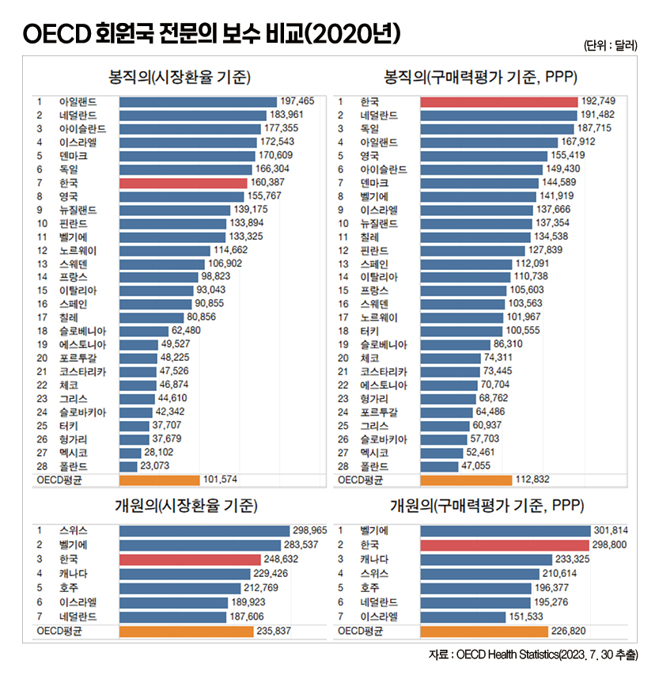
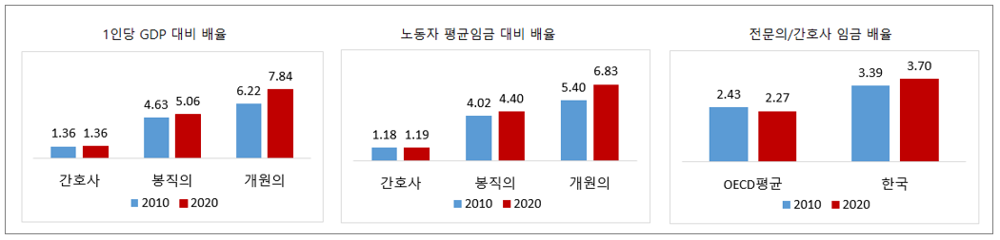
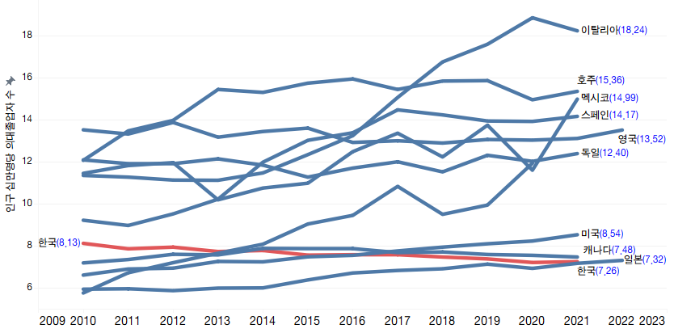

박영삼의 통계로 보는 노동
한국 의사 임금 간호사의 3.7배, 임금격차 OECD 1위
모든 기준 따져 봐도 한국 의사 압도적 ‘고임금’ … 국내 간호사·일반 노동자 대비 격차도 확대

지난달 30일 국내 언론이 우리나라 전문의 급여가 OECD 회원국 가운데 가장 높다고 보도했다. 경제협력개발기구(OECD) 자료에 따르면 우리나라 병원에 고용돼 월급을 받는 봉직의(페이닥터)의 임금은 구매력 평가(PPP) 기준 미국 달러 환율로 표시할 경우 19만2천749달러로 자료를 제출한 28개국 중 1위를 차지했다. 한국 다음으로 의사 급여가 높은 나라는 네덜란드(19만1천482달러)였고, 3위는 독일(18만7천715달러)이었다. 한편 사업소득으로 집계하는 개원의 보수는 7개국에서 자료를 제출했는데 한국은 29만8천800달러로 벨기에(30만1천814달러) 다음으로 2위를 기록했다.
구매력 평가(PPP) 기준만 문제 아니다
OECD 보건통계는 의사를 전문의와 일반의로 구분하고 있으며, 개원의와 봉직의 급여를 따로 각각 집계한다. 보수 금액은 자국 통화와 미달러 시장환율, 구매력 평가 기준이 모두 나와 있다. 4가지 유형의 의사 급여를 3개 기준으로 작성하는 것이다. 한국 정부가 보고한 2020년 전문의 보수는 봉직의 임금이 1억8천930만원이었고 개원의 보수는 2억9천345만원이었다. 시장환율(2020년 원달러 환율 1천180.3원)을 적용할 경우 전문의 중 봉직의와 개원의 급여는 각각 16만387달러, 24만8천632달러였다. 봉직의 급여는 28개국 중 7위, 개원의 사업소득은 7개국 중 3위였다. 구매력 평가 환율은 2020년 1달러당 982.1원으로 평가됐다. 이를 적용하면 봉직의 임금이 19만2천749달러, 개원의 보수가 29만8천800달러로 한국이 각각 1위, 2위가 된 것이다.
이런 이유 때문인지 대한의사협회 산하 의료정책연구원은 구매력 평가 환율을 적용한 OECD 통계가 잘못됐다고 반박에 나섰다. 하지만 구매력 평가 기준은 임금과 소득 관련 국제비교에서 일반적으로 사용된다. 그리고 구매력 평가 기준이든 시장환율 기준이든, 봉직의든 개원의든 한국 의사급여의 증가세는 회원국 가운데 압도적으로 높다. OECD 보건통계에는 2010년 이후 데이터가 모두 수록돼 있다. 2020년까지 10년 동안 한국 의사의 임금은 구매력 평가 기준으로 2010년 13만6천104달러에서 2020년 19만2천749달러로 10년 동안 42% 상승했다. 하지만 시장환율 기준으로는 10만6천908달러에서 2020년 16만387달러로 50.0%나 증가했다. OECD평균 대비 한국의 의사 급여는 구매력 평가 기준으로 1.53배에서 1.71배로 높아진 반면, 시장환율 기준으로는 1.09배에서 1.60배로 상승폭이 훨씬 더 크다. 개원의 보수도 구매력 평가 기준으로는 63.4% 올랐고 시장환율 기준으로는 73.1%나 상승했다. 모든 면에서 한국 의사의 수입이 다른 국가들에 비해 큰 폭으로 급등했다고 볼 수밖에 없다.
의사 ‘나 홀로’ 임금 급상승
그렇다면 한국 의사의 보수 증가가 우리나라 1인당 국내총생산(GDP)이나 한국 노동자들의 전반적인 임금 상승에 따른 자연스러운 결과일까. 결코 그렇지 않다. 1인당 GDP 대비로는 2010년 4.63배였던 전문의 급여는 2020년 5.06배로 훨씬 더 높아졌다. 전체 노동자 평균임금 대비로도 같은 기간 4.02배에서 4.40배로 역시 더 크게 격차를 벌려 놓았다. 개원의의 경우 6.22배에서 7.84배로, 노동자 평균임금 대비로는 5.40배에서 6.83배로 훨씬 더 격차가 크다.

의사협회는 또한 이 같은 의사 임금 증가가 단지 의료산업의 팽창 때문이라고 말하고 싶을지 모른다. 하지만 같은 기간 한국 간호사의 임금은 의사들만큼 오르지 않았다. OECD 통계상으로 2010년 1인당 GDP 대비 1.36배이던 간호사의 임금(4만98달러)은 2020년에도 1.36배 수준(5만2천33달러) 그대로다. OECD 순위로는 14위에 해당한다. 노동자 평균임금 대비 간호사 임금은 2010년 1,18배에서 2020년 1.19배로 거의 변화가 없다. 회원국 중 15위에 해당한다. 간호사의 임금은 1인당 GDP와 전체 노동자 임금상승만큼 증가했다.
결과적으로 간호사 임금 대비 의사의 임금만 더 높아진 것이다. 2010년 한국 간호사 대비 전문의 의사의 임금수준은 3.39배였다. 이것이 2020년에는 3.70배로 더 벌어졌다. 이 기간 OECD 평균은 2010년 2.43배에서 2020년 2.27배로 격차가 줄어들고 있었다. 한국은 2020년 기준 간호사와 의사의 임금격차가 가장 큰 나라가 됐다.
의료비 지출 증가, 이익은 자본·의사에 집중
우리나라의 경상의료비 지출은 2010년에는 GDP의 5.9%인 78조3천억원에서 2021년에는 180조6천억원(GDP의 8.8%)으로 두 배 이상 늘었다. 가계의 의료지출과 국가의 건강보험 지출이 모두 늘었기 때문이고, 고령화와 1인당 의료비지출 증가가 동반된 결과다. 여기에 우리나라는 1인당 의사에 대한 외래진료 횟수가 가장 많고 인구 대비 MRI와 CT 장비 보유대수가 가장 많은 나라다. 인구 대비 병상수와 평균 입원일수도 세계 1위다.
한편 같은 기간 임상간호사수는 22만8천614명에서 45만3천864명으로 99% 증가했고 간호학과 연간 졸업자수는 4만2천861명에서 5만4천429명으로 26% 늘었다. 하지만 의사들의 상황은 전혀 다르다. 2010~2021년 동안 임상의사수는 9만8천293명에서 13만2479명으로 35% 증가하는데 그쳤고, 인구 10만명당 연간 의대 졸업자수는 2010년 8.13명에서 2021년 7.26명으로 오히려 줄어들었다. G20 국가 중 인구 대비 의대 졸업자수가 감소한 나라는 한국이 유일했다. 심지어 우리나라와 의사 비율이 비슷한 이스라엘·일본·캐나다·미국조차도 의대 졸업자수를 크게 늘려 왔는데 한국은 정반대 모습을 보이고 있다. 늘어나는 의료지출은 병원을 비롯한 의료산업의 매출증가로 이어지지만 그 이익은 자본과 의사에게로 집중된다.

이런 현상은 의사의 장시간 노동과 짧은 환자당 진료시간, 과열된 의대입시와 왜곡된 노동시장을 불렀다. 하지만 의료산업 부문에서 노동조합은 간호사를 비롯한 의료인력의 증원을 요구해 왔고 의사협회는 의사인력 증원에 반대하고 있다. 누가 공공성을 추구하고 누가 담합과 카르텔에 집착하고 있는지 분명하지만, 정부는 엉뚱한 곳에서 공격대상을 찾는 것을 멈추지 않고 있다.
고려대 노동문제연구소 노동데이터센터장 (youngsampk@gmail.com)